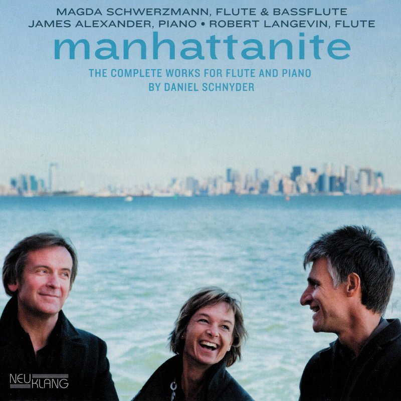

Manhattanite
Die kompletten Werke für Flöte und Klavier von Daniel Schnyder.

TeiresiasDaniel Schnyder
00:00 / 00:30
ManhattaniteDaniel Schnyder
00:00 / 00:30
Les fontaines d'AixDaniel Schnyder
00:00 / 00:30
Querblick
Soloprogramm mit 9 verschiedenen Travers- und Querflöten quer durch die Flötengeschichte.
Marin Maraisum 1700
00:00 / 00:33
Joseph Bodin de Boismortier1. Hälfte 18. Jh.
00:00 / 00:20
Carl Philipp Emanuel Bach2. Hälfte 18. Jh.
00:00 / 00:57
Anton Stamitzum 1800
00:00 / 00:45
Ernesto Köhler2. Hälfte 19. Jh.
00:00 / 00:44
Claude Debussyum 1900
00:00 / 00:24
Pierre Octave Ferroud1. Hälfte 20. Jh.
00:00 / 00:19
Matthias Müllerum 2000
00:00 / 00:21